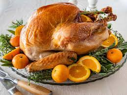

Thanksgiving Turkey Recipe History
The original use of the Turkey during thanksgiving was for bonding time between the pilgrimites natives.
This time of thanks was during a time of colonialism in which many settlers from Europe arrived to find new continents and land to explore.
Sourced from Brittanica
Steps to make Turkey
Thanksgiving Turkey is a very special dish only commonly made on Thanksgiving and sometimes Christmas day.
Ingredients
Of course you need the Turkey itself
Then Butter
Salt and Pepper
Lemon
Onion
Garlic

Directions
You will need at least 1.5 pounds of turkey for each person
The Turkey needs to be roasted for 15 minutes per pound
Preheat your oven to 450 degrees fahrenheit
Add your turkey, but before you do that set the temperature back down to 350 degreees fahrenheit
Cover the Turkey with alluminum
Your Turkey is done and ready to eat when it has reached an internall temperature of 165 degrees
Now this turkey is steaming hot! So before consumption let it rest for at least half an hour
Link to Turkey making video
Turkey Video
Tips for making turkey
Refrences
For worded info www.britannica.com/story/why-do-we-eat-turkey-on-thanksgiving
for the turkey image.https://www.allrecipes.com/recipe/166160/ juicy-thanksgiving-turkey/juicy-thanksgiving-turkey/
for the steps into making a turkey! how-to-cook-a-turkey-the-simplest-easiest-method-cooking-lessons-from-the-kitchn-160905
For the video https://www.youtube.com/watch?v=9Eo8qd-Tyfs